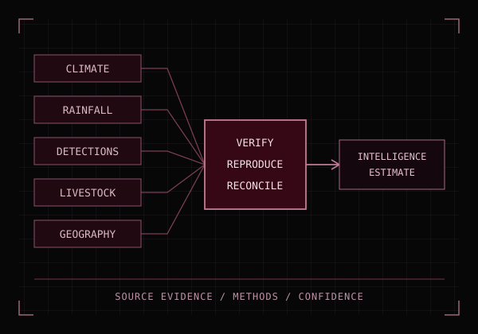

CAPSTONE / DATA QA

GEOG 476 / Fall 2026 / Ongoing
Screwworm Evidence & Data QA
As the team’s Ingestor, I use an AI-assisted workflow to inspect contributor packages, reproduce processing, and document what GIS and environmental evidence can support.
Team capstone. My contribution is evidence intake and reproducibility review.
View the capstone case study